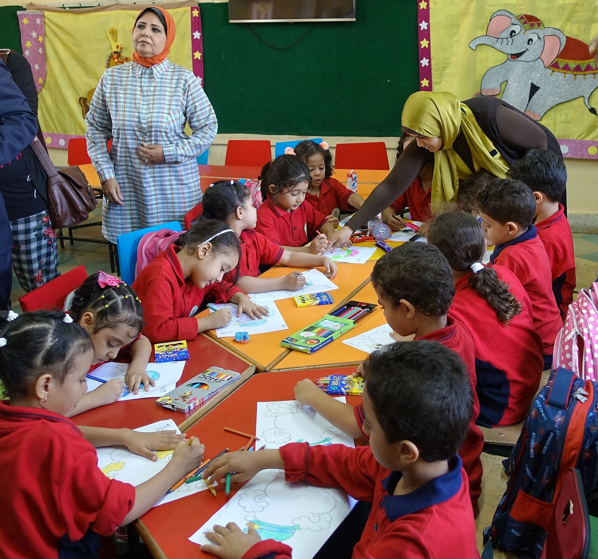

New Imkon centre opens in Samarkand: preschool for 150 children and rehabilitation for 100 a month
The new centre in the National Agency for Social Protection's network combines education and treatment; the network provided over 546,000 treatments in 2025.

A new Imkon centre for children with disabilities and special needs has opened in Samarkand. The centre combines specialised preschool education, correctional-pedagogical support and comprehensive rehabilitation in a single facility.
Capacity
The preschool department is designed for 150 children (ages 2–7) in 10 specialised groups. The outpatient (day) department can serve about 100 children (ages 2–18) per month. Staff include special-education teachers, speech therapists, psychologists, and physiotherapy and rehabilitation specialists.
Network figures
According to the National Agency for Social Protection, more than 546,000 treatments and sessions were conducted across the Imkon network in 2025, and 3,777 children received outpatient rehabilitation. Before the Samarkand centre, the network operated in Nukus, Qibray (Tashkent region), Qarshi and Zarafshon (Navoiy).

Expansion plan
The state is expanding the network nationwide, with new centres planned in Fergana, Namangan and Nurafshon (Tashkent region). Imkon centres draw up an individual programme for each child and coach parents to continue the work at home.
Context
The opening took place within the 'Investing in Children's Well-being' international summit held in Samarkand, attended by Uzbekistan's First Lady Ziroat Mirziyoyeva. Imkon ('opportunity') is a state network of early-intervention and rehabilitation centres under the National Agency for Social Protection, which operates under the President.